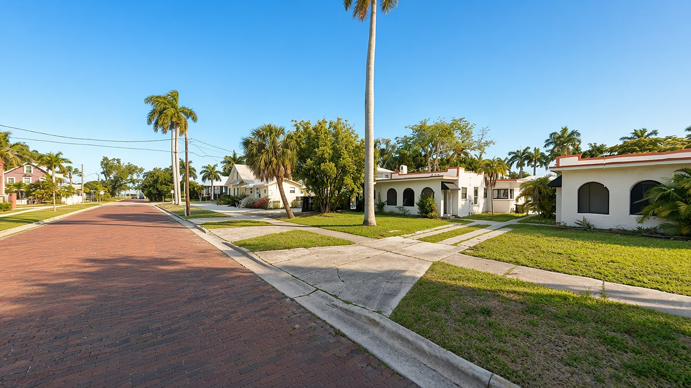
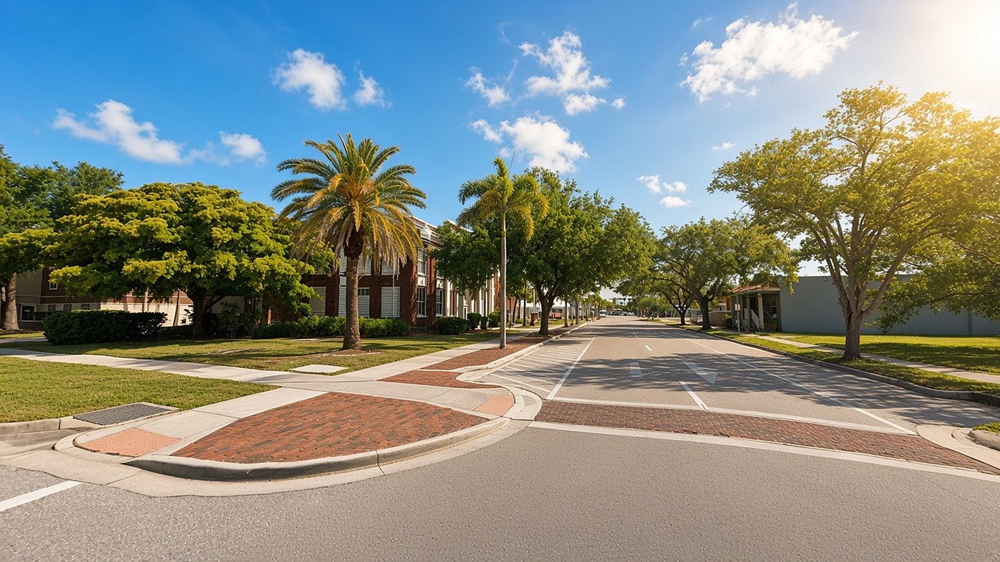

Draft preview for review. Not published. Expand Existing Page for /explore/punta-gorda/historic-district/. Goes live 2026-12-01. Images shown from local copies. Rollout batch

Explore · Punta Gorda · Downtown and Historic District
Downtown Punta Gorda is where the city began: a grid of shaded streets by the harbor, with a National Register historic district of homes from the 1880s to the 1920s.
It is also where Punta Gorda goes out to eat, walks the Harborwalk, and shops on a Saturday. If you want to live close to all of it, here is what to know about the neighborhood, the historic district, and downtown Punta Gorda homes for sale. For the bigger picture, start with Explore Punta Gorda.
The short version
On the National Register. The Punta Gorda Residential District was listed January 7, 1991.
22 blocks, 125 contributing buildings. Mostly wood-frame vernacular and Queen Anne houses.
Small, older homes. Median single-family living area in the original plat is about 1,352 square feet; median build year 1961.
Walkable. The district sits between the harbor park on Retta Esplanade and the downtown commercial core.
1991
year listed on the National Register
125
contributing buildings in the district
452
single-family parcels in the original plat
$333,000
median qualified home sale, 2025 and 2026
Source: National Park Service, NRHP record 90002103; Charlotte County Property Appraiser, parcel file and subdivision list (downloaded Nov 20, 2026).
Location
Harbor on one side, downtown on the other.
The Punta Gorda Residential District is roughly bounded by West Retta Esplanade on the north, Berry Street on the east, West Virginia Avenue on the south, and Taylor Street on the west. Retta Esplanade faces a waterfront park, and the district sits just west of the city's commercial core.
Punta Gorda City Hall is inside the district, an unusual detail the National Register nomination points out: the seat of government sits in the original residential section rather than the commercial blocks. Several historic roadbeds still have their original brick pavers.
Source: National Park Service, NRHP record 90002103; Wikipedia, Punta Gorda Residential District.
History
Settlement era homes, 1884 to 1930.
The district's period of significance is 1884 to 1930. Its National Register nomination counted 163 buildings, 125 of them contributing. Most are one- and two-story wood-frame vernacular houses from the mid-1880s to the late 1910s, with larger Queen Anne homes along the north and east edges and a few masonry houses from the 1920s Florida land boom.
| Item | Detail |
|---|---|
| Listed | January 7, 1991 |
| NRHP reference | 90002103 |
| Size | 22 city blocks |
| Buildings | 163 (125 contributing) |
| Period of significance | 1884 to 1930 |
| Styles | Wood-frame vernacular, Queen Anne, Bungalow/Craftsman |
Source: National Park Service, NRHP record 90002103; Wikipedia, Punta Gorda Residential District.

West Marion Avenue at Punta Gorda City Hall.
Homes
Older, smaller, and full of character.
The county's original Punta Gorda plat and Trabue's Addition hold about 1,022 parcels, 452 of them single-family homes. The median home was built in 1961, about 63 percent were built before 1980, and the median living area is about 1,352 square feet. The middle half of county just values runs from about $148,000 to $348,000.
About 26 percent of homes in the original plat were built in 2000 or later, often infill on lots between older houses. The plat is bigger than the historic district, so not every home here is a historic house, and downtown also has condos and townhomes. If a condo is on your list, read our Punta Gorda condo checklist first.
Historic
Wood-frame homes inside the National Register district. Charm, porches, and old systems.
Check
Wiring, plumbing, foundation, termites
Mid-century
The most common age in the original plat. Often smaller lots and room to update.
Check
Roof age and windows
New
Newer homes and condo buildings closer to the harbor and downtown.
Check
Association documents and reserves
County figures come from the Charlotte County Property Appraiser's public parcel file (downloaded November 20, 2026). Just value is the county's market value estimate on the latest certified roll, not an appraisal or a list price. Sale figures use each parcel's most recent recorded sale when that sale was qualified and dated 2025 or 2026.
Source: Charlotte County Property Appraiser, parcel file and subdivision list (downloaded Nov 20, 2026).
Before you buy
Old houses need a closer look.
Before buying an older downtown Punta Gorda home, get a thorough inspection with a four-point and wind mitigation report, ask the city whether any local historic review applies to exterior changes, check the flood zone near the harbor, and look up permits for past work.
Older homes often need a four-point inspection to insure. Order it early.
National Register listing alone is mostly a record. Ask the city about local review before planning exterior work.
Streets near the harbor can sit in a different flood zone than a few blocks inland.
Look up permits so you know what was approved and finished.
Our homeowners insurance guide and wind mitigation guide explain the reports, and our things to do in Punta Gorda list covers what is a short walk away.
Source: FEMA Flood Map Service Center; Charlotte County residential permits.
FAQs
Where is the Punta Gorda historic district?
The Punta Gorda Residential District on the National Register of Historic Places is roughly bounded by West Retta Esplanade, Berry Street, West Virginia Avenue, and Taylor Street, just west of the downtown commercial core and next to the harbor.
When was the Punta Gorda Residential District listed?
It was listed on the National Register of Historic Places on January 7, 1991.
How old are the homes in downtown Punta Gorda?
The historic district's period of significance runs from 1884 to 1930. Its National Register nomination counted 163 buildings, 125 of them contributing, mostly wood-frame vernacular and Queen Anne houses from the mid-1880s to the late 1910s, plus some 1920s masonry homes.
Does National Register listing restrict what I can do to my house?
National Register listing by itself is mostly an honor and a record. Local rules are what control changes, so ask the City of Punta Gorda about any local historic review or permits before you plan exterior work.
Are there condos in downtown Punta Gorda?
Yes. Downtown has condos and townhomes along with older single-family homes. Our condo checklist covers what to ask any association.
What do downtown Punta Gorda homes cost?
In the original Punta Gorda plat and Trabue's Addition, the median county just value for a single-family home is about $221,000, and qualified 2025 and 2026 home sales had a median of about $333,000. Condition and lot matter a great deal in older homes.
Want to live downtown?
We will pull recent sales on the blocks you like, check the flood zone, and flag what an older home may need. Call or text The Helgemo Team at (941) 770-2275.
The office is at 320 Cross Street, Punta Gorda, Florida 33950. You can also meet Brian Helgemo or read more about the team.
Sources: National Park Service, National Register record 90002103, Punta Gorda Residential District; Wikipedia, Punta Gorda Residential District; Charlotte County Property Appraiser, parcel file and subdivision list (downloaded Nov 20, 2026); FEMA Flood Map Service Center. Checked November 20, 2026.